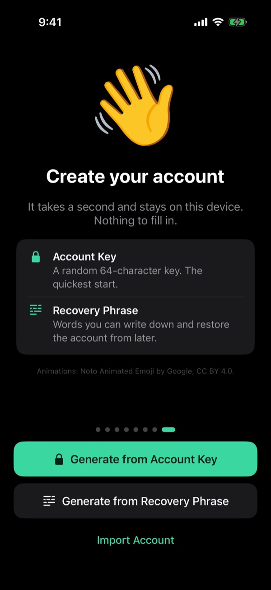

Several accounts
Add, switch, exit, delete or erase
Many accounts, one phone
Profile → Accounts lists every account on this phone, by @username or public key. Tap one to switch to it: each keeps its own chats.

Make a new one
Accounts → Generate New Account. From Recovery Phrase gives 24 words to write down. From Account Key makes a random key and asks for nothing: it has no phrase.
Bring one in
Import Account takes an Account Key of 64 characters or a Recovery Phrase. The phrase brings back the TON wallet too; see Your keys.
Exit
Hold an account and tap Exit: it leaves this phone but stays on the relay. Leave the one in use and the last one left opens.
Several at once
Tap Select in Accounts, tick the accounts and tap Exit. Only their Account Key or phrase brings them back.
Delete or erase
At the bottom of Settings. Delete Account removes the account in use from the relay, @username too. Erase All Data clears every account from this phone; on the relay they stay.
Earlier on this blog
From the guide in Viper 1.5.34: Profile → Settings → Help → Guides. All posts